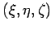

Inhalt Index DeskTop Bronstein

 Differentialgleichungen Partielle Differentialgleichungen Lineare partielle Differentialgleichungen 2. Ordnung Integrationsmethoden für lineare partielle Differentialgleichungen 2. Ordnung
Differentialgleichungen Partielle Differentialgleichungen Lineare partielle Differentialgleichungen 2. Ordnung Integrationsmethoden für lineare partielle Differentialgleichungen 2. Ordnung


Konstruktion der GREENschen Funktion für das DIRICHLETsche Problem der
LAPLACEschen Differentialgleichung
| (9.100a) |
für den Fall, daß das betrachtete Gebiet eine Kugel mit dem Radius R ist. Die GREENsche Funktion hat die Form
| (9.100b) |
mit als Abstand des Punktes vom Kugelmittelpunkt, r als Abstand zwischen den Punkten (x,y,z) und und r1 als Abstand des Punktes (x,y,z) zum symmetrischen Punkt des Punktes  gemäß (9.99c), d.h. zum Punkt . Das POISSONsche Integral ergibt sich bei Beibehaltung der Bezeichnungen von Beispiel A zu